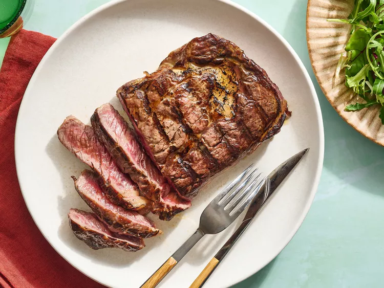

Ribeye Steak

Description
Ribeye steak is a rich, flavorful cut of beef known for its marbling, which gives it a juicy, tender texture.
Cut from the rib section, it has a robust, buttery flavor with a balance of fat and meat that melts during cooking,
making it one of the most popular steaks.
My note
Ribeye steak and New York strip steak are my favorite steaks. They are not too dry. Ribeye will give you more juicy taste.
Ingradients
- Ribeye steak (preferably thick-cut, bone-in or boneless)
- Salt (for seasoning)
- Olive oil (or any cooking oil, for searing)/li>
- Butter (for basting)
- Garlic (optional, for flavor)
- Oil and butter
- Fresh herbs (optional, such as rosemary or thyme)
Steps
- Season the steak. Generously season both sides of the ribeye with salt and freshly ground black pepper.
Let it sit at room temperature for about 30 minutes.
- Sear the steak.Once the skillet is hot, place the steak in the pan. Sear for 3-4 minutes on each side,
until a golden-brown crust forms.
- Add butter and herbs. Lower the heat, add butter, garlic, and herbs (rosemary or thyme) to the skillet.
Baste the steak by spooning the melted butter over it for another 1-2 minutes.
- Rest the steak.Remove from the pan and let the steak rest for 5-10 minutes before slicing.
- Enjoy your juicy ribeye steak.